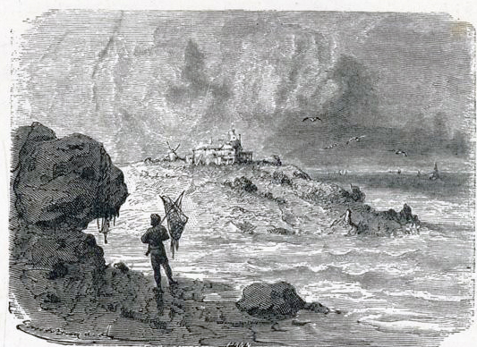
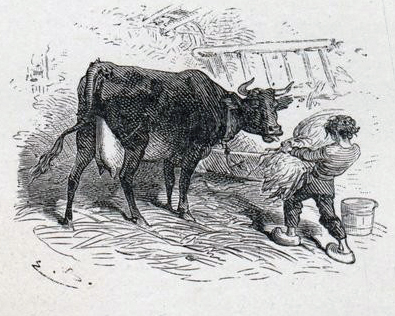

KHI đến nhà ông Biên-Gia tôi mới biết ông quả là một người kỳ-cục, thiên-hạ nói không sai.
Tôi vừa mới bước chân vào, ông không để cho tôi thở, bảo luôn:
– Con lại đây, con đã viết thư bao giờ chưa? Không hả? Bây giờ con viết cho mẹ con biết rằng con đã đến nơi vả ngày mai, anh Bẩy (anh Thứ Bẩy) sẽ lại nhà con lấy quần-áo.
Ông đưa tôi vào một phòng lớn đầy sách vở và để tôi ở đó.

.Tôi muốn khóc hơn là viết, trái tim tôi đang thổn-thức vì nỗi nhớ nhà, sự đột-ngột đó làm cho tức-nghẹn lại. Tuy-nhiên, tôi cố vâng lời ông.
Nước mắt tôi cứ tràn ra rơi xuống giấy nhiều hơn mực, mặc dầu là lá thư tôi viết lần dầu, tôi nhận thấy nó ngắn-ngủn làm sao ấy: “Con đã đến nơi và ngày mai anh Bẩy sẽ lại lấy quần-áo cho con”, có thế thôi tôi không biết viết gì hơn nữa.
Đã hơn một khắc đồng-hồ, óc tôi cứ luẩn-quẩn về câu đó, nó không chịu kéo dài ra, bỗng tai tôi nghe thấy tiếng ông Biên-Gia và anh Bẩy đang nói chuyện từ phòng bên cạnh.
Anh Bẩy nói:
– Em bé đến thực à?
– Anh tưởng nó không đến hay sao?
– Nếu vậy sẽ có một sự thay đổi lớn ở trong nhà. Ông thì ăn về buổi trưa, tôi thì uống về buổi sáng. Vậy em bé phải đợi đến trưa mới ăn với ông hay em sẽ nhậu rượu vói tôi cho tiện?
– Nhậu rượu? Anh điên à?
– Nào tôi có quen nuôi trẻ bao giờ.
– Ngày xưa, anh cũng là đứa bé con, phải không? Vậy thì anh sẽ đối đãi với em bé này cũng như ngày xưa người ta đã đối đãi với anh.
– Ngày còn bé, tôi sống trong khổ-cực. Nếu ông bảo nuôi em bé theo cách đó thì thà đuổi nó trở về nhà nó còn hơn. Chắc ông không quên rằng ông còn mắc chút ơn với em bé đó.
– Chính anh, anh cũng không nên quên điều đó. Anh sẽ dành cho nó tất cả những gì mà thuở bé anh thích, nghĩa là anh hỏi nó muốn gì thì anh cho nó như ý.
– Nếu ông cho phép thế thì hay lắm.
– Anh Bẩy, anh có biết con trẻ dùng để làm gì không?
– Lũ nó chỉ dùng để phá phách và quấy mọi người, chứ được việc gì?
– Không phải thế, lũ chúng dùng để tái-lập đời chúng ta khi đời chúng ta đã lỡ-làng; lũ chúng dùng để thành-tựu nhưng công-cuộc mà chúng ta đã thất-bại.
Nói xong, ông sang buồng tôi, đọc qua bức thư ngắn cụt rồi bảo tôi:
– Con chẳng biết gì cả. Thôi được. Chưa trồng đã đòi hái quả thế nào đưrợc! Bây giờ, cho con đi chơi.
Chỗ ở của ông Biên-Gia thực là kỳ-quặc, riêng biệt trong một cù-lao nhỏ quen gọi là Hòn Gianh.
Đứng ở bờ biển trông ra, hòn đảo có từng bậc từ thấp lên cao như một diễn-đài hình tam-giác, sườn bên này dài và thoai-thoải cách đất-liền độ bốn trăm mét, cỏ cây xanh tốt, thỉnh-thoảng lại nhô lên một vài mỏm đá xám nhọn hoắt. Sườn bên kia trông ra biển, trơ-trụi, không thứ gì mọc được với gió biển và hơi muối.
Nhà ông Biên-Gia ở đỉnh cù-lao, nơi các sườn chụm lại thành một cao-nguyên nhỏ. Tuy được cái ưu-thế bao-quát khắp vòng chân trời ở phía đất bằng cũng như ở ngoài biển cả, nhưng ngôi nhà lại bị bất cứ gió phương nào cũng táp lại nhiều khi dữ dội vô cùng. Nhưng những ngọn cuồng-phong đó cũng không làm gì nổi vì tường rất dầy, xây từ thời Thống-chế Soa-Sơn bằng đá hoa-cương để chống bom đạn. Đó là một tiền-đồn phòng-ngự quân Anh đổ-bộ và được liên-lạc với các đội vệ-binh ở bờ biển.
Thực ra, những ngọn gió dữ đó cũng có ích phần nào, về mùa đông nó đem lại cho cù-lao một khí-hậu khá ôn-hòa không kém gì ở trong đất vì thế ở những lũng nhỏ, người ta thấy mọc chen-chúc những cây trúc-đào, cây vãn-anh, cây sung, cây vả, cành lá rất xanh tươi.
Ông Biên-Gia được anh Bẩy giúp sức đã biến hòn đảo thành một nương vườn thô-dã, duy mặt vườn phía tây vẫn còn hoang-phế vì luôn luôn gió dập và sóng dồn, thành ra nơi đây chỉ dùng làm vườn cỏ cho mấy con bò sữa và dê đen.
Có điều đáng chú-ý là tất cả những công việc khai-thác có thể gọi là lớn-lao đó chỉ do có bàn tay của hai người thôi, không nhờ đến nhân-công nào khác.
Tôi nghe thấy trong làng người ta nói ông Biên-Gia là một người keo-kiệt nên mới lập-dị như thế. Nhưng khi tôi biết rõ ông thì tôi nhận thấy ông có một đức-tính rất hay là: “con người phải tự-lực mưu-sinh”.
Cả đến những cái ăn cái uống thường ngày, ông không cần nhờ cậy ai cả. Ông dùng sữa của bò ông nuôi, rau trái trồng trong vườn, cá do anh Bẩy câu dược, bánh làm lấy và nướng lấy, cối xay và lò bánh đều tự ông chế ra. Đất cù-lao cũng khá rộng để cấy lúa mì ăn quanh năm và trồng những cây tần để lấy quả ép rượu.
Cho được công-bình, phải kể đến phần công khá lớn của anh Bẩy trong những công-tác nói trên. Anh đã từng làm ấu-thủy-quân, làm thủy-thủ, làm tùy-tùng cho sĩ-quan, làm đầu bếp cho tàu đánh cá, tóm lại anh đã tập-sự trong tất cả mọi nghề.
Sự giao-kết của hai người không phải là sự giao-kết giữa ông chủ và đầy-tớ mà là sự hợp-tác của hai hội-viên. Hai người ăn cùng một bàn, phân-biệt có chăng ở chỗ ông Biên-Gia ngồi đầu bàn và anh Bẩy ngồi ở cuối.
Hôm tôi mới đến, ông Biên-Gia có dẫn-giải cho tôi rằng:
– Con ơi! Ta không có ý đào-tạo cho con thành một quý ông nghĩa là một ông Chưởng-khế hay ông Y-sĩ, nhưng chỉ luyện cho con thành một tay đi biển xứng-đáng là con người. Có nhiều cách để học-hỏi, người ta có thể học trong khi chơi, người ta có thể học trong khi du-ngoạn. Lối học đó có hợp với sở-thích của con không?
Tôi hơi lấy làm lạ khi nghe ông nói việc giáo-dục có thể trau-giồi trong khi chơi. Tôi càng ngạc-nhiên hơn nữa khi thấy ông đem thực hành ngay nghĩa là trong buổi chiều hôm đó.
Tôi theo ông đi tản-bộ ngoài bãi biển, ông vừa đi vừa hỏi chuyện tôi. Chúng tôi vào trong một khu rừng sồi.
Ông trỏ đàn kiến đang bò ngang đường và hỏi tôi:
– Cái gì thế này?
– Những con kiến.
– Phải rồi, nhưng chúng làm gì?
– Chúng tha mồi.
– Không phải ta hỏi thế. Con theo chúng tới tổ. Con sẽ quan-sát kỹ rồi nói cho ta biết những điều con đã trông thấy. Nếu hôm nay con không nhận thấy gì khác thì ngày mai, ngày kia con lại đến, cho đến khi con nhận-xét thấy một điều gì.
Sau hai ngày đi quanh tổ kiến, tôi nhận thấy có những con kiến chẳng làm gì cả, trong khi các con khác hoạt-động không ngừng và chúng còn cho các con lười biếng ăn nữa.
Sau khi tôi kể lại những nhận-xét của tôi cho ông nghe, ông bảo:
– Tốt lắm. Con đã trông thấy những điểm chính, thế là đủ rồi. Những con kiến không làm gì không phải nó ốm yếu hay bị thương-tật như con tưởng, đó là những con kiến chúa của những con suốt đời chỉ có việc phục-dịch nghĩa là những con làm nô-lệ. Nếu không có sự ủng-hộ của bọn nô-lệ thì những con kiến chúa không sao tự đi kiếm mồi được. Con lấy làm ngạc-nhiên, phải không? Thế mà ở đời, đôi khi cũng còn một vài quốc-gia mà ở đấy có những người ăn không ngồi rồi sống vào lưng những kẻ khác làm việc đầu tắt mặt tối để cung cấp cho họ. Nếu các ông chúa bị tàn-tật phải ăn không ngồi rồi, kẻ này nghỉ người khác thay không nói làm gì vì người ta phải giúp đỡ lẫn nhau, nhưng sự thực không phải thế. Những con kiến chúa chính là những con có sức-lực và can-đảm hơn hết nghĩa là đủ tư-cách ra chiến-trận. Chúng ta sẽ cùng nhau trở lại chỗ đó, chúng ta sẽ được xem chúng giao-chiến với nhau, sẽ thấy những con kiến chúa thân-chinh ra trận và mục-đích của chúng là để bắt cho nhiều nô-lệ.
Trong khi chờ đợi con được mục-kích tấn-kịch đó, bây giờ ta cho con đọc cuốn sách của nhà bác-học Huy-Ba, trong tả cuộc chiến-đấu kịch-liệt của hai đám kiến trong khi ở cách đó năm trăm dặm đang diễn ra một cuộc đại-chiến giữa người và người mãnh-liệt và kinh-khủng hơn. Thuở đó, không biết người ta có những lý-do chánh đáng để giết lẫn nhau không, ta không rõ lắm, nhưng ta thấy sự sát-hại vô cùng khủng-khiếp.
Chính ta, chỉ một tí nữa là ta phải bỏ xác ở trận-địa. Ta và các bạn đồng-đội đang đi bên này bờ sông Yên-Giang. Bên kia, hữu-ngạn sông, quân Nga đặt một giàn đại-bác và bắn sang dữ-dội. Ta chỉ thấy tiếng nổ ầm-ầm nhưng không trông thấy đạn rớt ở đâu, vì chỗ đó là một khuỷu sông và có một gò che khuất.
Ta vừa đi vừa nghĩ. Hôm đó, có thể là ngày chết của ta vì ta đang đi qua mũi súng của giặc, lại chính là ngày sinh-nhật của bà Biên-Gia nhà ta. Ta nghĩ vẩn-vơ giá được ở nhà ăn mừng thì sung-sướng quá. Chợt ta thấy ở dưới chân, trong hào ẩm-ướt ta đang đi, có một hàng dài những cây lưu-ly đang nở hoa. Con phải biết trong lúc giao-chiến, quân lính không xếp thẳng hàng và đi ngay-ngắn như ở trong các bức tranh đâu. Ta và các bạn ta được tự-do đi rải ra các nơi. Những bông hoa tím xinh tuơi làm ta quên cả tính-cách quan-trọng của lúc đó. Tự-nhiên ta cúi xuống hái vài bông. Ngay lúc đó, một luồng gió lạnh đi vút lên đầu ta, chỉ cách độ vài phân, rồi ta nghe thấy một tiếng nổ như tiếng sét. Một mớ cành liễu gẫy văng tới vùi kín thân ta. Thì ra lúc đó ta đang đứng trước pháo-đội của địch; nó vừa hạ phăng tất cả các bạn của ta, chẳng còn người nào. Nếu ta đứng thẳng, không cúi hái hoa thì ta cũng đi đời như họ. Con có nhận thấy ta nghĩ đến “nhà ta” là một điều hay không? Có hả? Khi ta chui ra khỏi đống cành lá thì Thống-Chế Ney đã làm cho đại-bác của giặc câm miệng rồi.
Ông không thích sách lắm. Nhưng có một quyển ông trao ngay cho tôi buổi đầu, đó là quyển sách đã làm khuôn-mẫu cho đời ông. Quyển sách đó đã tạo ra Hòn Gianh với những công-trình kỳ-diệu như người ta đã trông thấy. Quyển sách đó đã làm ông nẩy ra ý thích cái dù lớn che đầu. Quyển sách đó đã đem lại cho người giúp việc của ông cái tên “Thứ Bẩy”. Đó là quyển Lỗ-Bình-Sơn phiêu-lưu ký.
Ông bảo tôi:
– Con sẽ học trong sách này để biết thế nào là sức mạnh của tinh-thần.
Tôi không biết có đứa trẻ nào đọc sách này mà lòng vẫn bình-thản không, chứ tôi vừa xem vừa thấy phấn-động vô cùng.
Tôi ham đọc không phải vì những triết-lý cao sâu mà chính là do những thú mơ-mộng trong truyện: những cuộc phiêu-lưu trên biển, nạn đắm tàu, đảo hoang vắng, những dân man-rợ, những cơn sợ-hãi, những điều mới lạ...
Anh Bẩy biết nhiều nhưng mù chữ.
Thấy tôi say mê cuốn sách, anh muốn hiểu trong sách nói gì và bảo tôi đọc cho anh nghe.
Ông Biên-Gia nói:
– Nó sẽ đọc cho anh nghe. Nhiều cái hay lắm.
Mười năm luân-lạc đã đem lại cho anh Bẩy ít nhiều kinh-nghiệm. Nghe tôi kể chuyện nào, anh cũng cãi lại. Nhưng tôi có một câu trả lời khiến anh hết bài-bác:
– “Sách đã viết thế”.
– Có chắc đúng thế không?
Tôi liền cầm sách và tôi đọc.
Anh Bẩy vừa nghe vừa gãi mũi, có vẻ chịu nhịn lắm. Cuối cùng anh nói:
– Vì “sách đã viết thế” tôi không cãi. Nhưng tôi đã từng ở bờ biển châu Phi, không bao giờ tôi trông thấy những con sư-tử bơi ra khơi để làm hại các tàu bè. Dù sao…
Anh còn qua các biển ở miền Bắc. Anh được mục-kích nhiều cái hay cái lạ, anh đem kể lại cho tôi nghe. Những chuyện của anh hay không kém chuyện Lỗ-Bình-Sơn mà có phần thú hơn nữa.
Tôi hỏi:
– Sách có “viết” những chuyện đó không?
Anh Bẩy đáp:
– Tôi không nghe đọc những chuyện đó, nhưng chính mắt tôi đã trông thấy. Cái đó thì làm quái gì, vì không “viết” vào sách.
Những cuộc đàm-thoại kiểu ấy không thể đem lại cho tôi ý-tưởng thích sống an-nhàn trên đất. Vì thế, mẹ tôi lo-lắng, đến nói với ông Biên-Gia đừng cho tôi theo nghề đi biển.
Ông đáp:
– Thưa bà, nếu bà nhận thấy tôi đưa con bà vào một con đường mà bà không muốn cho nó theo, tôi xin trả lại con bà, nhưng không bao giờ bà làm cho nó thay đổi ý-chí được, vì nó là truyền-thống của những người chỉ thích đi tìm những “cái không thể được” mà thôi. Tôi thưa thực cùng bà rằng: Tính đó ít khi làm nên giàu-có, nhưng nhiều khi đem lại những sự-nghiệp lớn-lao.
Nghe ông nói thế, mẹ tôi phân-vân, không đòi hỏi gì nữa. Tôi yên tâm tiếp-tục học tự-vị.
Ông Biên-Gia bảo tôi:
– Cái mà hôm nay con thấy buồn cười thì ngày mai con sẽ thấy rất có ích. Mẹ con sợ rằng con sẽ thành một người đi biển, chính ta cũng không cầu mong như thế. Nhưng ta xem tính con rất thích phiêu-lưu nên ta phải xếp đặt làm sao cho vừa thỏa chí của con, vừa làm mãn-nguyện mẹ con. Muốn thế, ta sẽ cố luyện cho con được như ông An-Mỹ, môt nhà hàng-hải trứ-danh, mà con mới đọc tiểu-sử hôm nào, hoặc được như ông Sỹ-Bồn, một y-sĩ người Hòa-Lan, đã cho ta biết nước Nhật. Ta muốn chuẩn-bị cho con đi đến những xứ mà xưa nay ít người bước chân tới, để có ích cho Tổ-quốc chúng ta nghĩa là con sẽ đem về cho nền Khoa-học nước nhà những kỳ-hoa dị-thảo, những động-vật hữu-ích. Như thế còn hơn là làm những kẻ đi biển suốt đời như người “ hàng xách”, chỉ có việc đi chở cà-phê từ Nam-Mỹ về Pháp rồi lại đem những xa-xỉ-phẩm từ Pháp sang Nam-Mỹ.
Thực là một giấc mộng đẹp. Nhưng hại thay! Giấc mộng đó chỉ là một giấc mộng mà thôi.
Mỗi khi ông Biên-Gia đi đâu, ông thường cho tôi đi theo. Có khi ông đi thuyền một mình ra cù-lao Rinh, cách Thiên-Cảng chừng ba dặm.
Một buổi mai hôm kia, khi tôi còn đang ngủ thì ông đã ra cù-lao ấy. Đến bữa ăn trưa, chúng tôi đợi mãi không thấy ông về, lòng rất băn-khoăn.
Anh Bẩy nói:
– Có lẽ ông lỡ lớp triều sáng. Đến chiều, thế nào cũng về.
Trời lặng, biển yên. Bề ngoài xem ra không có gì nguy-hiểm cả. Tuy-nhiên, anh Bẩy tỏ ra lo-lắng.
Chiều đến, ông Biên-Gia cũng không về.
Anh Bẩy, đáng lẽ đi ngủ, chạy ra đốt lửa ở đỉnh cù-lao. Tôi chạy theo anh, nhưng anh bắt tôi về ngủ. Sáng hôm sau tôi dậy sớm và tìm đến chỗ anh.
Ở phương đông, một ánh trắng lóe ra ở dưới chân trời và dần-dần hiện rõ.
Anh Bẩy nói:
– Có lẽ ông Biên-Gia gặp sự chẳng lành. Ta phải mượn thuyền bác Hai Sồm để ra đảo Rinh xem sao.
Đảo Rinh là một đám đá hoa-cương lởm-chởm, không người, chỉ có những giống hải-điểu mà thôi. Không mấy lúc, chúng tôi đã tới cù-lao.
Chúng tôi tìm-tòi khắp mọi nơi, không thấy ông Biên-Gia mà thuyền cũng không. Tin về đến Thiên -Cảng, mọi người đều xúc-động, vì người ta vẫn quý-mến ông già Chủ-nhật, mặc-dầu tính-nết kỳ-cục của ông.
Người ta bàn-tán:
– Chắc thuyền đắm.
– Người ta sẽ tìm thấy thuyền.
– Có khi hải-lưu cuốn mất rồi.
Anh Bẩy im-lặng, chẳng nói chẳng rằng, suốt ngày đi quanh bãi biển. Khi nước triều xuống, anh theo chân nước tiến ra, anh thăm tìm từng hốc đá một mỏm này đến mỏm khác. Anh không hề nhắc tên ông Biên-Gia, chỉ khi gặp một người đánh cá, anh hỏi, giọng buồn rầu:
– Có tin gì mới không?
Rồi anh thấy mắt tôi long-lanh lệ, anh sẽ vỗ vào đầu tôi và bảo:
– Em là một đứa trẻ tốt; phải, một người có lòng tốt.
Mười lăm ngày sau vụ biệt-tích khó hiểu của ông Biên-Gia, bỗng có một khách lạ tìm đến Hòn Gianh. Đó là ông Biên-Ái, cháu gọi ông Biên-Gia bằng bác ruột, quê ở Noóc-Măng-Đi.
Sau khi hỏi lại chúng tôi những việc xảy ra, ông Biên-Ái ra Thiên-Càng thuê mười hai người phu, sai đi tìm-tòi khắp bờ biển. Cuộc tìm kiếm diễn-hành suốt ba ngày. Hết ngày thứ ba, ông Biên-Ái ra lệnh đình-chỉ việc tìm, xét rằng ông Biên-Gia đã chết, dòng nước biển đã cuốn cả người lẫn thuyền mất rồi.
Anh Bẩy hỏi:
– Thưa ông, có chắc thế không? Dòng nước biển có thể lôi cuốn thuyền đi mà con thuyền vẫn không bị đắm. Rất có thể chủ tôi bị đưa sang Anh-quốc. Thì mai đây sao chủ tôi lại không trở về được?
Sáng hôm sau, ông Biên-Ái gọi hai chúng tôi đến trước mặt mà bảo rằng: Trại Hòn Gianh không cần người giúp việc nữa. Nhà cửa sẽ khóa lại. Những gia-súc sẽ giao cho Chưởng-khế trông nom cho đến khi bán được.
Anh Bẩy nghẹn tắc cổ lại lắp-bắp không ra lời.
Lúc sau, anh quay lại bảo tôi:
– Em đi gói quần-áo đi, chúng ta ra khỏi nhà này ngay lập tức.
Trước khi bước ra, anh Bẩy lại trước mặt ông Biên-Ái và nói rằng:
– Thưa ông, đối với pháp-luật, ông là cháu ông Biên-Gia nhưng đối với tôi, ông không phải là cháu của ông ấy. Không, ông không phải là cháu của ông ấy. Đó là lời của một thằng lính-thủy chân-chính nó nói với ông như vậy.
Anh Bẩy đã nhận lời về ở nhà mẹ tôi cho đến khi anh tìm được chỗ ở trong làng. Nhưng anh chỉ ở với chúng tôi trong ít ngày thôi.
Sáng nào anh cũng ra bãi biển và thơ-thẩn tìm-tòi. Cứ như thế gần ba tuần-lễ. Rồi một buổi chiều, anh xin phép mẹ tôi sáng hôm sau anh sẽ đi ra đảo thuộc Anh và có lẽ sang hẳn Anh-quốc.
Anh nói:
– Vì, như bà đã biết, lòng biển không giữ vật gì bao giờ, đúng thế. Nay, nếu nó không trả lại tức là nó không lấy gì.
Mẹ tôi muốn hỏi thêm, nhưng anh không nói gì nữa. Tôi tiễn chân anh ra tận bến thuyền.
Khi tôi hôn từ-biệt anh, anh nói:
– Em là một đứa trẻ rất tốt. Khi nào có dịp đến Hòn Gianh, em nhớ mang cho con bò đen dúm muối, nó cũng mến em lắm đấy.

.